Indirect File Leaks in Mobile Applications
This page lists the supplementary materials for our following MoST'15 paper:
Still under construction... We appreciate your patience for the full report. :)
1. IFL (indirect file leak) attacks:
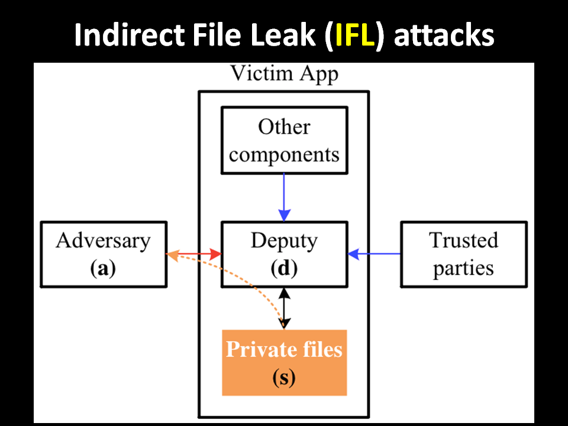
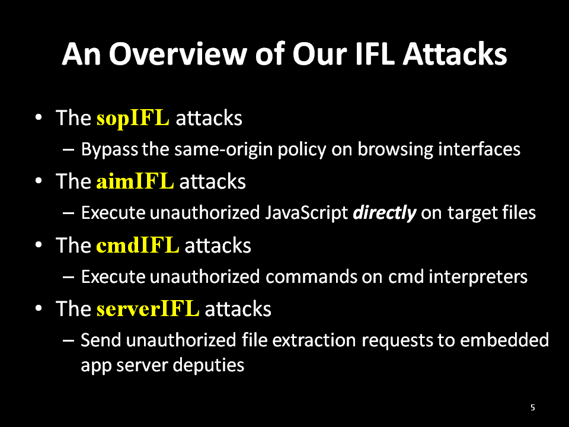
2. Our Contributions:
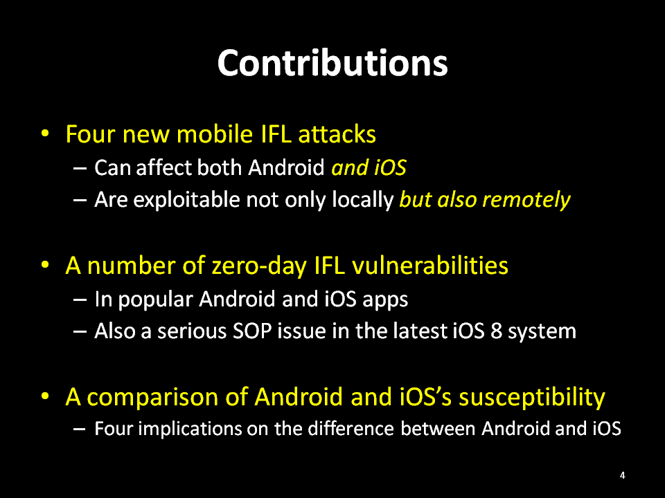
3. sopIFL attacks:
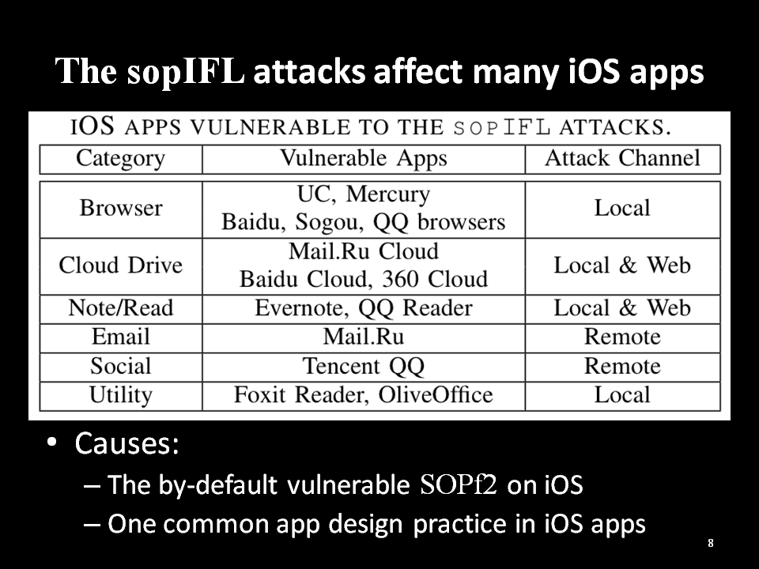
Two SOP (same-origin policy) weaknesses in the iOS web engine (see our report, to be annouced).
Evernote's sopIFL vulnerability: (acknowledged by Evernote security hall of fame)
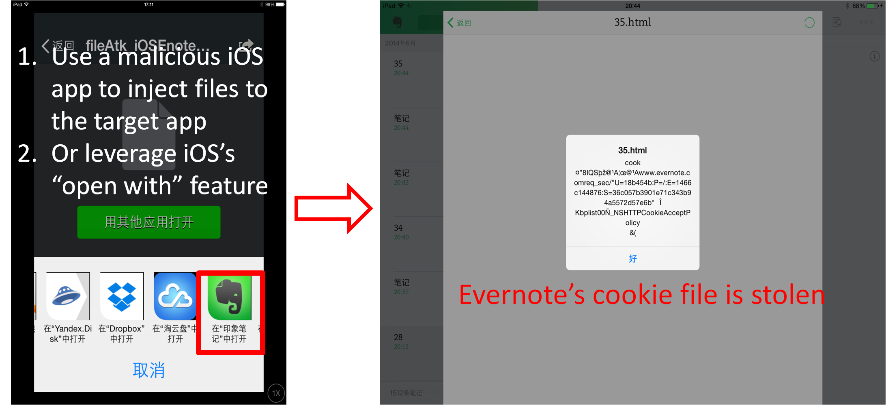
Mail.Ru's sopIFL vulnerability: (acknowledged by Mail.Ru security bug bounty)
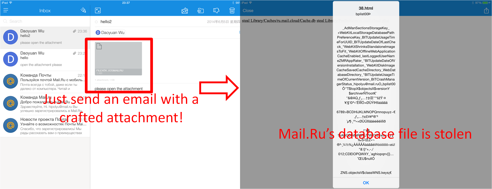
QQ's sopIFL vulnerability: (the raw report in Chinese)
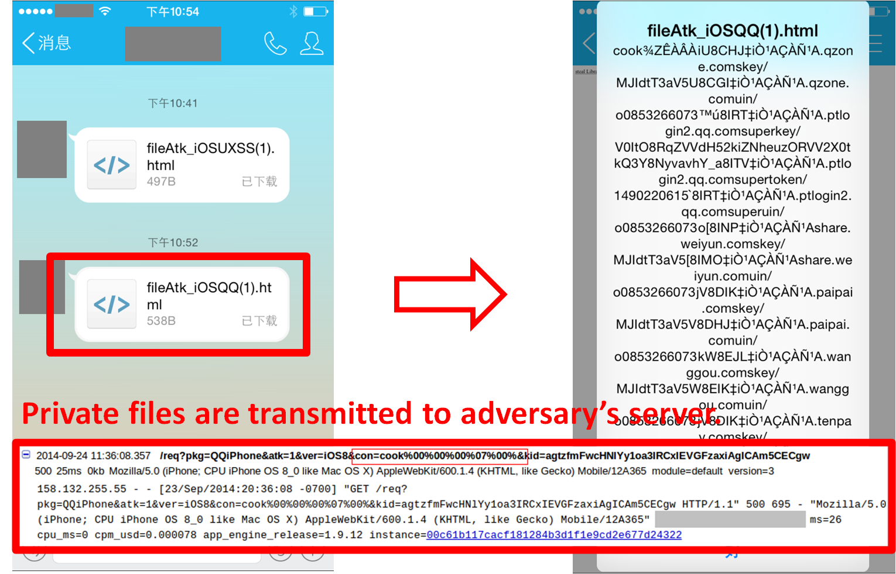
4. aimIFL attacks:
Apps vulnerable to the aimIFL attacks:
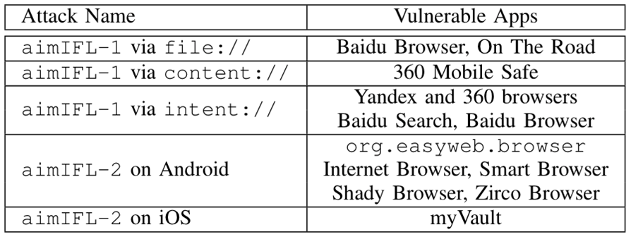
An example of aimIFL-1 vulnerability (in the On The Road travel app):
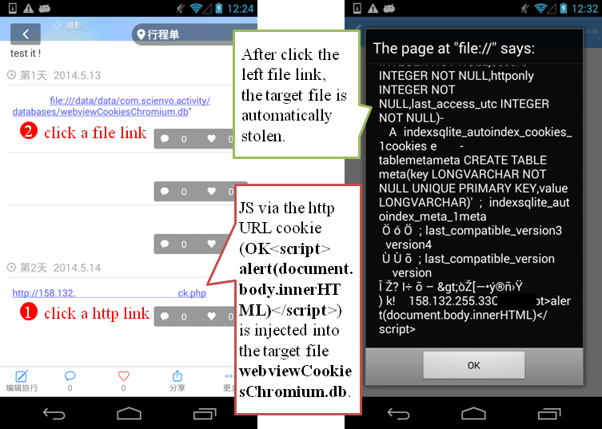
Baidu Browser's aimIFL-1 vulnerability (acknowledged as the most valuable Baidu vuln. report of the second quarter of 2014):
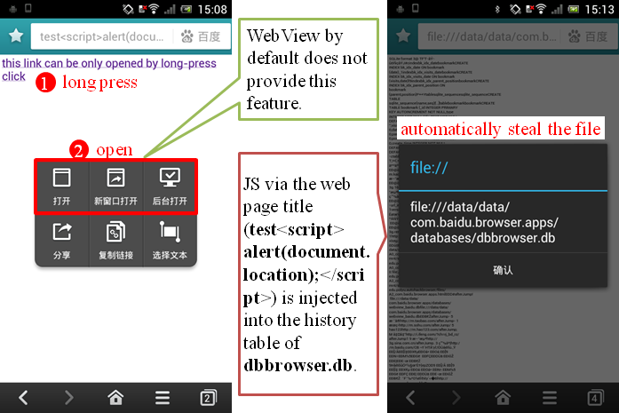
Qihoo 360 Mobile Safe's aimIFL-1 vulnerability (acknowledged with the highest award in Qihoo 360's mobile bug bounty program history):
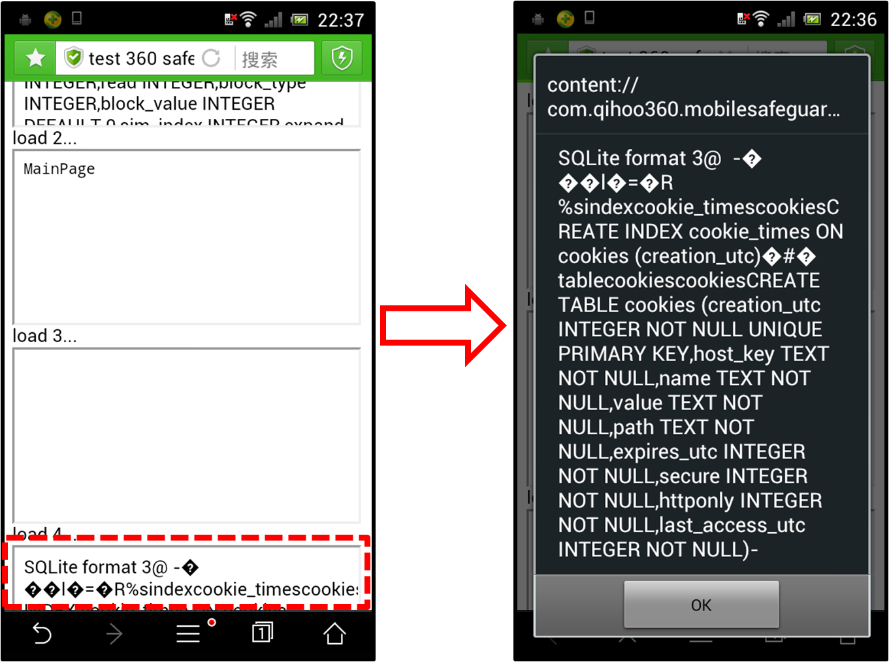
The aimIFL-2 attack on Android:
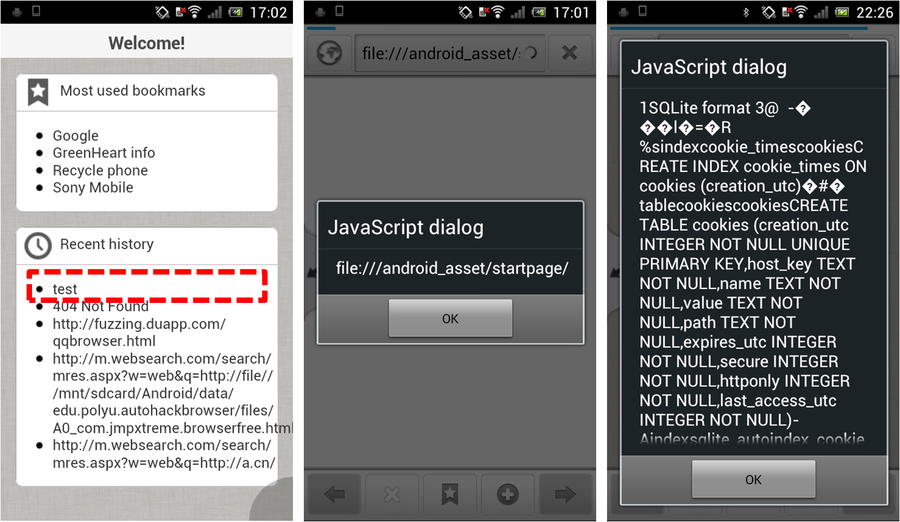
The aimIFL-2 attack on iOS:
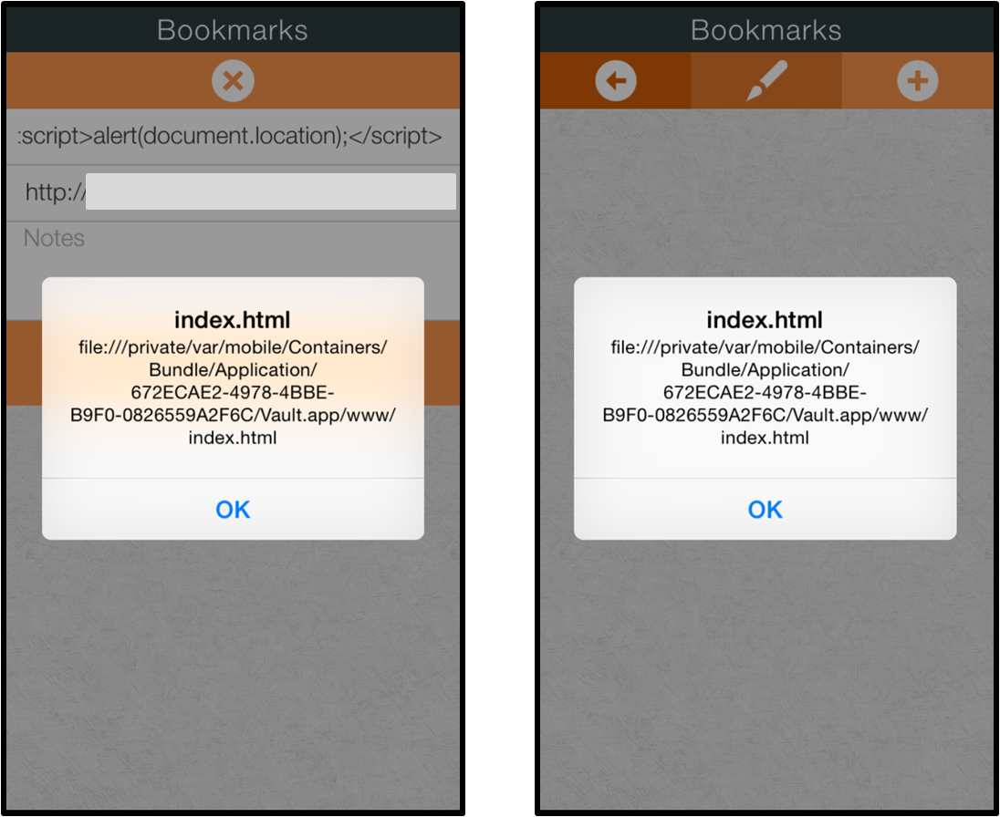
5. cmdIFL attacks:
We reported an cmdIFL issue in the popular open-source Terminal Emulator app (issue #374), see here and here.
6. serverIFL attacks:
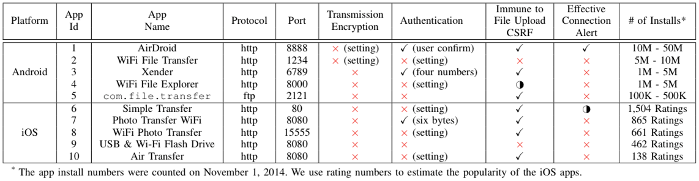